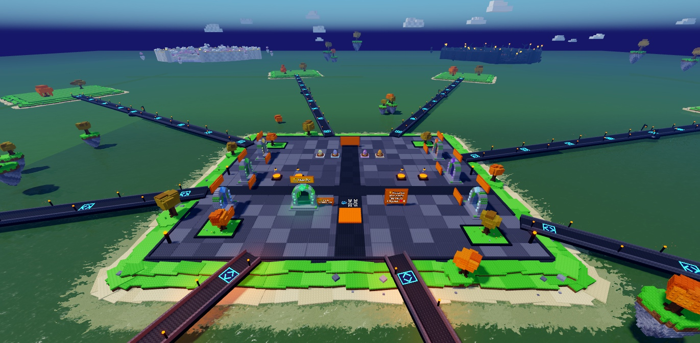
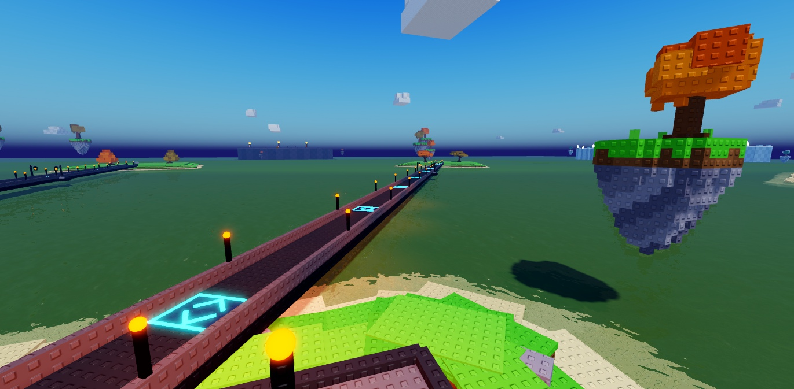
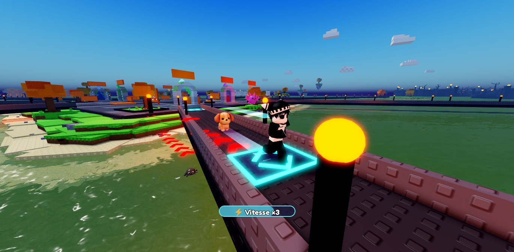
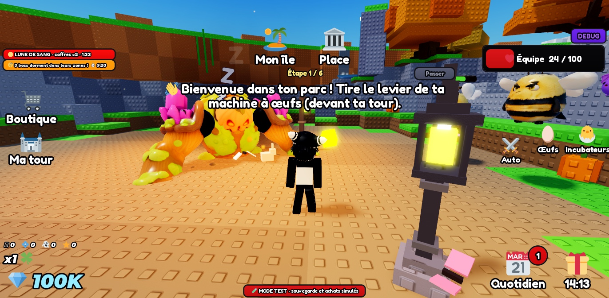
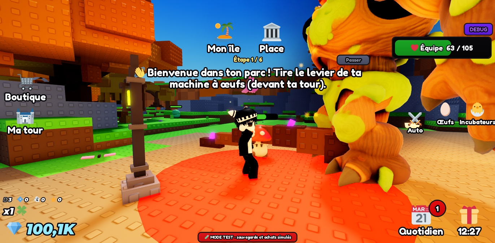
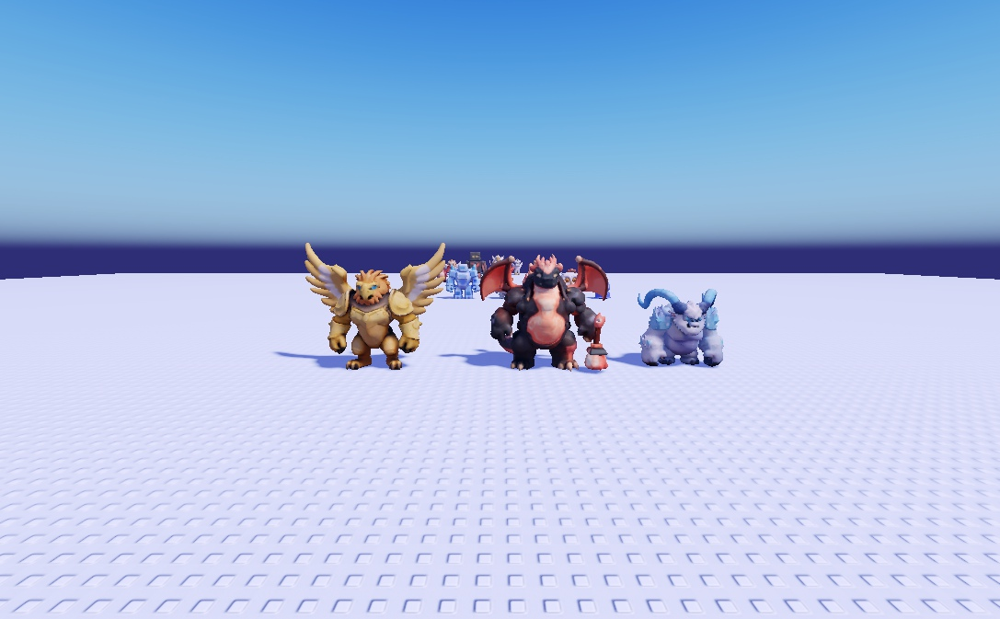
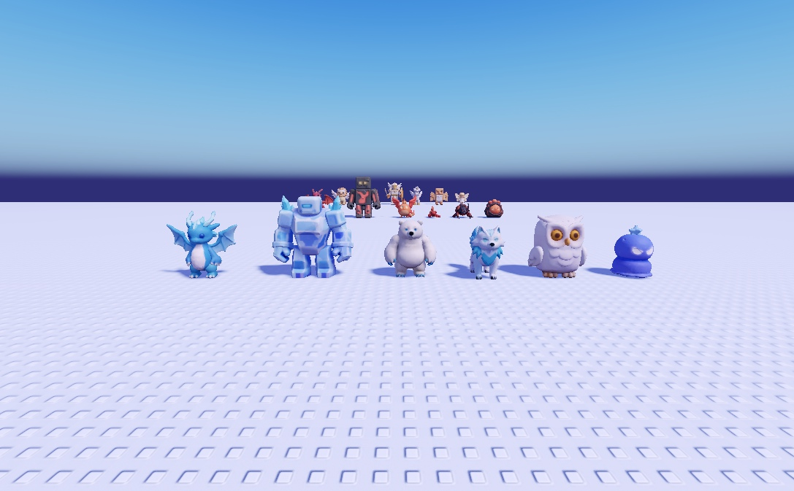
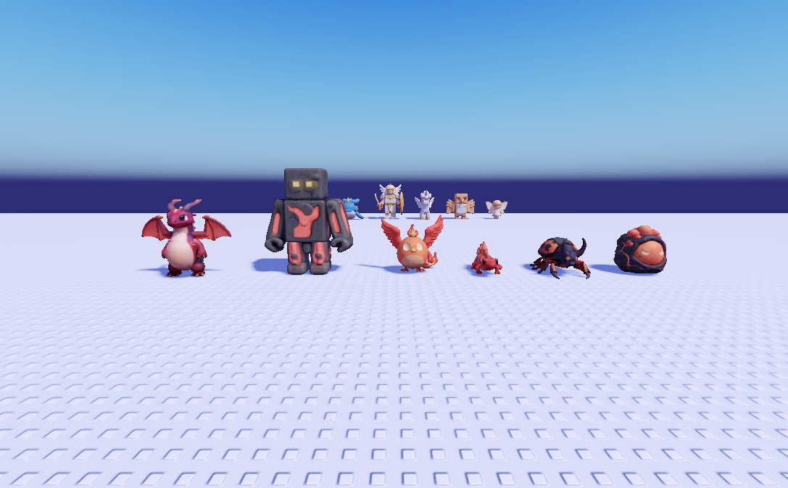
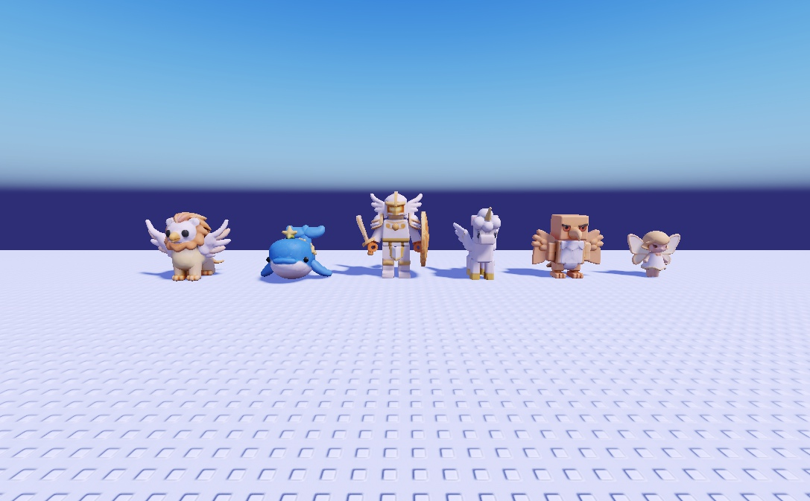
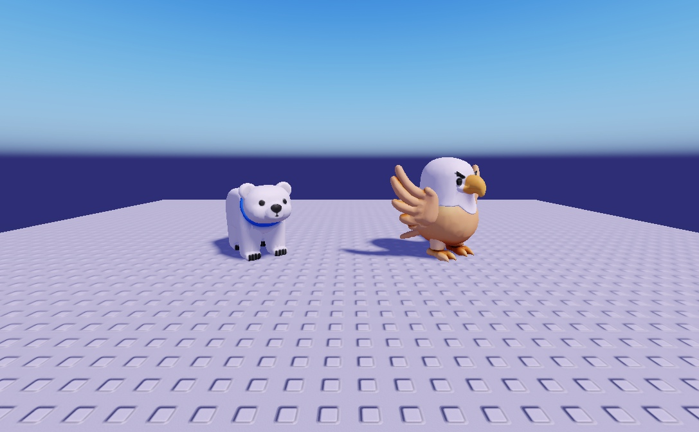

🌍 Ce qui a été fait : le nouveau monde
Ce sont de vraies captures du jeu dans Studio, prises le 17/10, et non des dessins. Tout est déjà dans le jeu et enregistré. CarteBoss endormisPlaques de vitesse3 nouvelles zones21 nouveaux modèles
1. La carte vue d'en haut
La place est au centre et les 8 îles des joueurs l'entourent, reliées par des ponts en étoile. Plus loin, les 6 zones de farm forment un grand cercle (1250 studs du centre), chacune avec son portail sur la place.

2. Les plaques de vitesse sur les ponts


3. Les 6 zones et leurs boss
| Zone | Pour entrer | Boss (pendant Halloween) | Difficulté du boss |
|---|---|---|---|
| 🌼 Prairie | accès libre | 🎃 Roi Citrouille | Facile · PV ×1 |
| 💎 Grotte | une créature Rare | 👻 Dragon Spectral | Moyen · PV ×1,8 |
| ❄️ Glaces (nouvelle) | une Épique | ❄️ Yéti Géant | Difficile · PV ×3 |
| 🌙 Bois des Ombres | une Légendaire | 💀 Liche Ancienne | Très difficile · PV ×4,5 |
| 🌋 Volcan (nouvelle) | une Mythique | 🌋 Dragon de Lave | Extrême · PV ×6,5 |
| ☁️ Céleste (nouvelle) | une Divine | 🦅 Griffon Doré | Légendaire · PV ×9 |
Pendant 10 minutes, les 6 boss dorment en même temps, chacun dans la clairière de sa zone. Puis ils repartent pendant 20 minutes. Le bouton « ⚔️ Réveiller le boss » ouvre le panneau de groupe (seul ou avec 2 amis). On ne peut gagner qu'une fois par boss et par passage.
❄️ Le Royaume des Glaces


🌋 Le Volcan


☁️ Le Royaume Céleste


Les zones déjà existantes


4. Les 21 nouveaux modèles 3D
Ils ont été générés par l'IA de Studio, dans le même style que les autres créatures du jeu.





- ✅ Plus de citrouilles d'Halloween (ni de bonshommes de neige à Noël) dans les 3 nouvelles zones.
- ✅ L'aigle doré et l'ours polaire ont été régénérés (image ci-dessus).
- ✅ Le sol du Royaume Céleste est maintenant crème doré : il ne se confond plus avec la neige des Glaces.
- ✅ Le Volcan est plus lumineux : rivière de lave en néon, deux fois plus de fissures, plus de piliers de feu et de cônes, et une lueur orange sur toute la zone.
- Les combats contre les nouveaux mobs utilisent le même système que les anciens (aucune erreur). À essayer avec une vraie équipe de bon niveau.